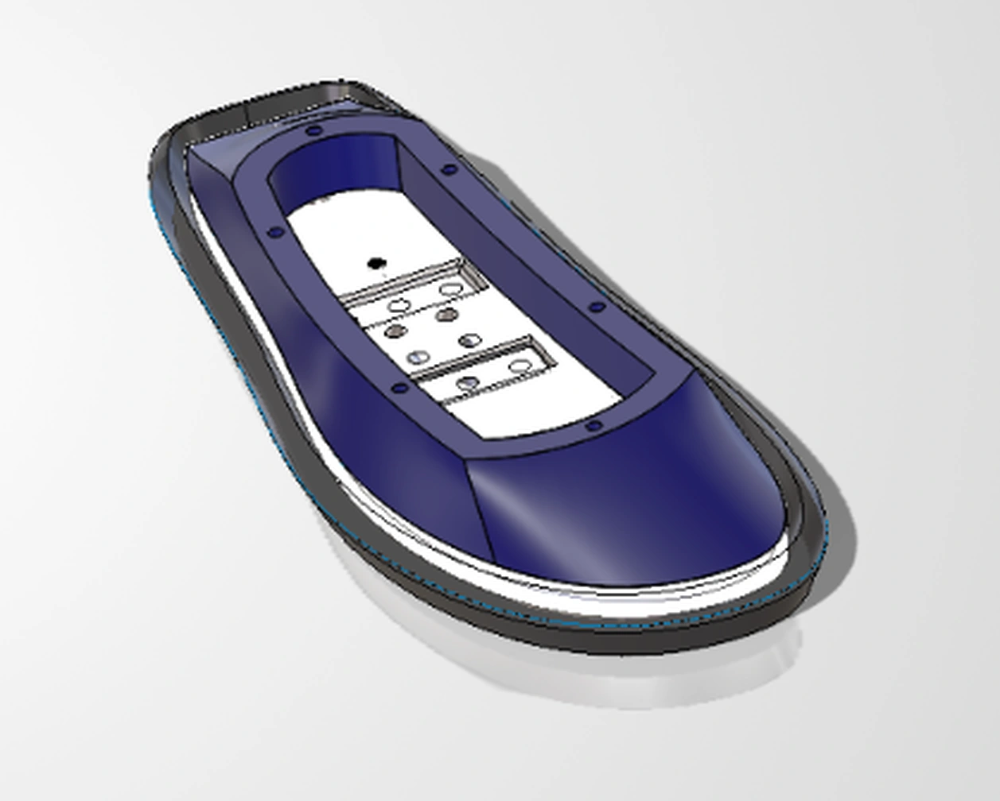

DECISION 001
Why 1.20 meters?
Study how reducing moment arms and rotating inertia could improve capability with fixed actuator limits.
Compact humanoid development using simulation-first architecture decisions and detailed mechanical design. Current target: 1.20 m tall, 35–45 kg, with a friendly boxy exterior.
Documented work: foot assembly, ankle linkage prototype, human-inspired joint limits, MuJoCo leg-proportion comparisons, and rotational-inertia design reasoning.

FOOT REV 02 · OCT 2026Existing CAD and a new simulation-driven system architecture.
Three active components: a traction-focused rubber outsole, a 6061-T6 aluminum mounting bracket, and a curved, non-load-bearing PLA exterior cover finished in deep indigo. The carbon-fiber plate is deliberately excluded from this baseline.
Published reasoning and simulation results; see detailed pages for assumptions and limitations.
Planned work—not completed milestones.
Current three-part right-foot baseline, documented design choices, print strategy, and open mechanical validation tasks.
The black rubber outsole provides the planned contact layer; the 6061-T6 aluminum bracket forms the structural ankle interface; the deep-indigo PLA cover shapes the visible exterior and is not intended as a primary load path. The carbon-fiber plate is not part of the present assembly.
Exactly three parts in the present baseline—not counting fasteners.
Ground-contact element and dark visual perimeter. Intended to provide traction and contact compliance; grade, attachment, friction, and wear performance require testing.
Aluminum structural mounting interface to the future ankle. Houses machined fastening features and is the receiving component for the lower cover fasteners.
Deep-indigo curved bodywork with a clean, continuous outer form. Planned FDM print, with six upper M4 future-mounting positions and six lower locations for the metal-to-plastic assembly interface.
DESIGN HISTORY · A former 3 mm carbon-fiber plate concept is archived for future study. It is not represented as a fourth current part.
Design for Reliability (DFR) governs the lower exterior-to-aluminum interface.
The exterior PLA cover is nonstructural, but it must remain attached during walking, acceleration, repeated impacts, and vibration. Six mechanical screw locations were selected because their retention, seating, and inspection can be engineered and tested more predictably than an untested magnetic-only concept.
The counterpart is aluminum 6061-T6. Ordinary magnets do not adhere to it; magnetic attachment would additionally require ferromagnetic targets, positional restraints, and drop-prevention features. That concept remains an alternative, not the current design.
Heat-set threaded inserts were considered for repeatedly removable PLA-to-PLA attachments, but the inserts are not physically available yet. Without the chosen insert in hand or verified manufacturer dimensions, the receiving bore geometry, installation interference, insertion process and retention cannot be evaluated properly. Initial prototypes therefore use manually cut M4 PLA threads where required, with thread durability monitored. The six lower cover-to-aluminum screws already engage the aluminum; brass inserts in the PLA clearance component are not needed for that connection.
Revisit condition: Procure actual inserts, confirm datasheet dimensions and installation method, print test coupons, and compare thread retention and repeated assembly against manually tapped PLA. Heat-set installation is not the same as a cold press-fit.
Manufacturing intent—not a completed slicer result or printed part.
SOLIDWORKS currently assigns Acrylic (Medium-high impact) as a temporary, approximate density/appearance stand-in. The manufactured part is planned in PLA; before meaningful FEA or mass reporting, replace this placeholder with a custom, print-process-specific PLA definition.
FDM tensile behavior and stiffness can vary with raster direction, layer adhesion, walls, infill and print orientation. A generic isotropic PLA property card is insufficient for validated mechanical simulation. Use measured print-specific orthotropic properties where supported or characterize printed coupons; keep uncertainty explicit.
Plan to use slicer-generated tree supports under overhangs and any hole features that require support in the selected orientation. Not every hole necessarily needs support. Inspect the toolpath, keep supports out of inaccessible cavities, and verify surface finish, dimensional accuracy, and easy removal.
Separate geometry screening from physical process validation.
The earlier bracket geometry passed ten configured milling/drilling checks. That result is not a substitute for rechecking the updated bracket, threads, joint strength, or machining setup.
Organic support generation is anticipated around challenging overhangs and holes. Final build orientation, support placement, boss integrity, printed dimensional accuracy, and finish are still unverified.
Earlier geometry satisfied two configured thickness rules. Mold tooling feasibility and outsole material/process decisions remain open; no production release is implied.
Provided CAD captures, including an isolated crop of the current foot. Click any image to inspect it.
Explicit engineering choices, stated with current evidence limits.
Six lower mechanical fasteners were chosen over a magnetic quick-release concept because secure retention during locomotion matters more than tool-free exterior removal. Physical bolt/joint testing has not yet confirmed retention under walking loads, but the chosen concept provides an inspectable, mechanically constrained path for validation.
Two interfaces are kept distinct: the six lower cover-to-aluminum positions and six upper M4 locations reserved for future exterior pieces. Mechanical access, fastener standardization, countersunk head clearance, and eventual disassembly matter alongside clean bodywork.
The smooth, continuous curved PLA cover uses a deep indigo finish, visually separated from the black rubber outsole and metallic structural bracket. The goal is a coherent exterior form without pretending that the cover carries the primary robot loads.
The rubber component is intended to provide a contact interface; the aluminum bracket provides the main structural and ankle connection; the printed PLA is protective/aesthetic exterior bodywork. The actual pressure distribution, GRF history, stiffness, traction and wear performance are not yet measured.
Carbon fiber appeared in an earlier concept, but it is not included in the current assembly. A plate might change bending stiffness, mass and elastic energy storage, but it could also add manufacturing complexity, cost and unwanted stiffness. Its benefit must be demonstrated, not assumed. Compare the present baseline against a CFRP variant with the same mounting/contact constraints, using quantitative deflection and stress analysis, system mass, fatigue/impact tests, contact/traction behavior and gait-level performance before deciding.
Your personal browser-local timeline. Public site visitors do not see one another’s entries.
This design site is public, but entries created through this form remain local to this browser. Use Export JSON for your own backups; edit index.html and republish to update the shared public record.
This form stores notes only in the browser that you are currently using; it is not a public guestbook.
These notes are not added to the published site or visible to its other visitors. Export and retain your own backups.
Unresolved at the current CAD revision:
Universal joint, pushrod linkages, bearing interfaces, and fastening development.
Initial physical prototype of the pushrod linkage mounting arrangement. The design uses circular bearing interfaces and mechanically retained fasteners rather than elongated adjustment slots.
The prototype is being used to evaluate the fastening arrangement, component alignment, and suitability of the geometry for laser-cut manufacturing.
The intended final configuration uses appropriately sized through-bolts and locknuts, eliminating the need for tapped holes in the linkage plates.

Manufacturing-driven selection of the linkage fastening arrangement.
The ROBOTTO Party Origin linkage serves as a mechanical design reference. Its CNC-machined components incorporate bearing mounting features into the linkage geometry.
This provides a useful reference for joint packaging and linkage architecture, but the manufacturing approach is not being directly replicated.
The proposed design uses flat linkage geometry, circular bearing interfaces, and through-bolts secured with locknuts.
This removes the need for tapped linkage holes and reduces dependence on secondary machining operations.
The objective is to preserve the required joint functionality while simplifying manufacturing and assembly.
Selected concept: Use standard through-bolts with locknuts instead of threaded holes in the laser-cut linkage components.
The fasteners provide axial clamping and mechanical retention. Close-clearance holes are intended to reduce positional play and improve alignment between the assembled components.
The bearing interface must independently maintain the required rotational freedom. Where a fastener passes through a bearing, suitable spacers or shoulders will be used to prevent unwanted bearing compression.
Manufacturing rationale: Eliminating tapped holes allows the linkage plates to be manufactured primarily from two-dimensional cut profiles.
Assembly rationale: Standardized fasteners simplify installation, disassembly, replacement, and future maintenance.
Physical assembly photographs. Select an image to inspect it at full resolution.
The physical prototype demonstrates the proposed linkage geometry and the arrangement of the bearing and fastening interfaces.
The current photographs show temporary fasteners extending beyond the linkage. These are not representative of the intended final bolt lengths.
Final hardware will be selected according to the assembled grip length, required thread engagement, and available clearance.
The prototype provides a basis for evaluating the mechanical assembly concept. Structural capacity, fatigue performance, bearing retention, and dynamic reliability have not yet been verified.
Remaining checks before finalizing the linkage design.
Planned mechanical design work.
Why the concept moved from a 1.676 m humanoid to a compact 1.20 m design.
The original full-size target was approximately 1.676 m. The concept was reduced to 1.20 m, motivated primarily by reducing moments of inertia and required joint torques while retaining the selected actuator family. This is an optimization hypothesis, not proof that every movement improves.
For rotating mass, the distance r to the rotation axis is critical: the point-mass approximation is I = m r². Bringing the same mass closer to the axis reduces inertia quadratically, improving potential angular acceleration for a given available net torque.
With uniform geometric scaling, equal density and similar mass distribution, m ∝ L³ and I ∝ L⁵. At 1.20 / 1.676 = 0.716 scale, ideal inertia becomes about 18.8% of the original (approximately an 81.2% decrease).
Compare an identical 10 kg concentrated mass at two perpendicular distances from a pitch axis while horizontal. Gravitational torque magnitude is τ = m g r. The available motor torque budget of 120 N·m below is a provisional user-selected comparison value, not a verified continuous rating for a particular Robstride model.
| Metric | r = 0.60 m | r = 0.84 m |
|---|---|---|
| Mass | 10 kg | 10 kg |
| Gravity moment, m g r | 58.86 N·m | 82.40 N·m |
| Point-mass inertia, m r² | 3.600 kg·m² | 7.056 kg·m² |
| Difference to illustrative 120 N·m ceiling* | 61.14 N·m | 37.60 N·m |
Interpretation: Shorter moment arms can free torque capacity for accelerating links or resisting disturbances. This example isolates one mass and one gravitational load case; it is not a verified whole-robot hip/knee torque prediction. Static vertical alignment, link COM, acceleration, multiple bodies, contact forces, reduction ratio, speed-dependent torque, and thermal limits all affect real joint loading.
*The subtraction from 120 N·m is illustrative, not a validated safety margin or usable continuous torque allowance.
Expected benefits to investigate: smaller inertial loads; potentially better actuator-to-weight capability; smaller structural members; easier system-level experimentation; compact, recognizable product form.
Costs to investigate: reduced reach and stride; smaller packaging volume; motors/battery becoming a greater fraction of total mass; foot-scale and stability tradeoffs; actuator performance cannot be inferred from scale alone.
Selection status: 1.20 m is the current concept baseline; 35–45 kg is a mass target; 50/50 is the preferred ratio for further validation. None has completed full-body dynamic recovery validation.
Human-inspired range-of-motion baseline for MuJoCo humanoid comparison.
Specify identical human-inspired single-axis joint motion limits for three leg designs (50/50, 45/55, 40/60). This is a baseline for squat and recovery testing, not a claim that every person reaches these angles or that the robot's mechanisms are already validated.
6 DOF per leg = hip pitch/roll/yaw + knee pitch + ankle pitch/roll. 12 lower-body DOF in total. Waist pitch/yaw are specified separately.
| Robot DOF | Human motion | Research reference | Selected limit |
|---|---|---|---|
| Hip pitch | Flexion / extension | 120° flexion; 10–20° extension [S1] | −20° to +120° |
| Hip roll | Abduction / adduction | 40–45° abduction; 20–30° adduction [S2] | 40° outward / 25° inward |
| Hip yaw | Internal / external rotation | 40° internal; 45° external [S1] | 40° internal / 45° external |
| Knee pitch | Flexion / extension | 130–135° flexion; −10° to 0° extension [S1] | 0° to 135° flexion |
| Ankle pitch | Dorsiflexion / plantarflexion | 20° dorsiflexion; 45° plantarflexion [S1] | −20° to +45° |
| Ankle roll* | Inversion / eversion | 30° inversion; 20° eversion [S1] | 30° inversion / 20° eversion |
*Human ankle inversion/eversion is anatomically coupled. A single robot hinge is an approximation.
limited="true" and a joint range, checking the MJCF compiler's angle setting.[S1] is a clinical normal-range table, not a population-average survey. Knee hyperextension is intentionally excluded. [S2] supports a chosen 40°/25° hip-roll baseline. [S3] gives alternative AAOS-based hip references (abduction 33.0° ± 4.8°, adduction 13.8° ± 6.3°), illustrating measurement and reference variability.
ROM alone does not prove a stable squat or successful floor recovery. Joint clearance, linked-axis behavior, ground contact, mass distribution, actuator torque-speed limits and controller behavior remain unresolved.
| Ratio | Hip → knee | Knee → ankle |
|---|---|---|
| 50/50 | 444.50 mm | 444.50 mm |
| 45/55 | 400.05 mm | 488.95 mm |
| 40/60 | 355.60 mm | 533.40 mm |
Historical leg length = 889 mm. These dimensions belong to the earlier approximately 1.676 m model. For the new 1.20 m concept, purely proportional leg scaling would give ~636.5 mm hip-to-ankle and ~318.3 mm per link in 50/50. Those revised dimensions have not yet been tested or selected from anthropometric constraints.
Stage A: collision-aware squat geometry, feet on ground, minimum pelvis height and reachable paths. Stage B: gravity, contact, actuator constraints, and controlled recovery. The existing geometry viewer is an earlier, less-complete screening study.
Packaging, visual identity, mass budget and high-level mechanical interfaces.
Adopt a visually approachable robot with a boxy, softly rounded exterior, intentional proportions, and cohesive panel transitions. CAD will still require surface modeling for corners, transitions, covers, and clean form continuity.
Design for Aesthetics is a real requirement alongside reliability, structural performance, manufacturability and service access. A memorable appearance should not compromise joint range or mechanisms.
Yaw: continuous unbounded rotation as a design goal (full 360° rotation and beyond). Pitch: up to 90° of forward bending, pending mechanical clearance and torque verification. No waist roll in the initial concept.
Continuous yaw requires power and data transfer across the rotating interface, such as a suitably specified slip ring, and deliberate bearing support, wire routing and enclosure clearance.
The 48 V lithium battery is an important concentrated mass. Its exact mass is not measured and voltage alone does not determine weight. Battery location near the lower torso/waist will be evaluated for COM, pitch inertia, safety, cooling and access.
Computer, sensors, communication boards, cameras and speakers can occupy upper torso volumes. Use 2–4 kg as a provisional combined allowance for smaller electronics and wiring (battery excluded), until actual masses are available. CAN can simplify motor communications but does not replace actuator power wiring.
Keep the current right foot's rubber outsole, 6061-T6 structural bracket, and nonstructural PLA shell as the starting CAD concept. Six lower mechanical cover fasteners and six separate upper mounting positions remain documented under Foot Assembly.
The existing foot may need rescaling or a contact-area review now that the whole robot has moved to 1.20 m. Retention, manufacturing and structural validation remain open.
Recorded geometry screening before the 1.20 m resizing decision. Original hip-to-ankle length: 889 mm.
A custom primitive-shape MJCF humanoid was generated for three ratios: 50/50, 45/55 and 40/60. Capsules/boxes represent links; hinge joints represent pitch DOFs. In the initial test, one foot was fixed to the world, gravity and collision detection were disabled, and scripted joint positions generated identical nominal knee bends.
This was intended to measure pelvis height under prescribed, comparable kinematic poses, not whether a real robot can balance, squat dynamically or stand up after a fall.
| Nominal knee bend | 50/50 hip height | 45/55 hip height | 40/60 hip height |
|---|---|---|---|
| 110° | 382.5 mm | 442.1 mm | 501.8 mm |
| 120° | 312.3 mm | 378.9 mm | 445.6 mm |
| 130° | 305.5 mm | 371.5 mm | 437.5 mm |
| 135° | 297.1 mm | 362.3 mm | 427.4 mm |
At 135°, the 50/50 pose places the pelvis 130.3 mm lower than 40/60. This strongly motivates retaining 50/50 as the first candidate for further testing, but the scripted pose does not optimize over all joint angles or check collisions, support, stability, power or recovery.
Research question: Does a 50/50 configuration maintain an advantage in collision-free recovery reachability and controllable stand-up trajectories once mass distribution and joint constraints are included?
A public overview of planned humanoid subsystems. Foot and ankle prototype records plus system-level simulation and joint-range research are now documented.
Current three-part foot: rubber, 6061-T6 aluminum and deep-indigo PLA, with reliability-focused attachment.
Physical pushrod-linkage prototype, bearing interfaces, fastener and manufacturing rationale.
1.20 m / 35–45 kg target and moment-arm torque study.
Boxy exterior, battery placement and 2-DOF waist concept.
Motor sizing, encoders, sensors, power, and wiring.
Three original-scale leg ratios tested; dynamic recovery not yet validated.
Built and ran a simplified humanoid geometry comparison in Linux using a Python virtual environment and MuJoCo. Tested 50/50, 45/55 and 40/60 thigh/shin ratios at a shared original 889 mm leg length, with nominal knee bends from 110° through 135°. Compared printed pelvis heights. At 135°, results were 297.1 mm, 362.3 mm and 427.4 mm respectively. Selected 50/50 as the provisional preferred ratio for follow-up recovery testing; not proven optimal.
Compiled clinical reference ranges for lower-body joints (ROM-LEG-001) and implemented human-inspired pitch constraints in the geometry prototype. Reviewed the role of moment arm and inertia in joint capability, then revised the robot-height target from approximately 1.676 m to 1.20 m with a provisional 35–45 kg system-mass goal. Proposed a friendly, compact, rounded-box exterior while retaining the existing foot CAD baseline.
Next action: resize the complete primitive model, estimate mass/inertia and battery location, add contact/gravity and actuator constraints, and test squat/recovery feasibility before committing to detailed leg CAD.
Evidence classification: recorded local MuJoCo geometry output + documented design decisions; no dynamic stand-up or physical robot test claimed.
Record new observations privately in your browser. Published design decisions live in the Foot Assembly documentation; this journal is not synchronized between visitors.
Browser-local storage may be cleared. Use the export control to back up your engineering notes as JSON.
This subsystem isn't documented yet. The workspace is ready to grow as new CAD assemblies and test results are added.